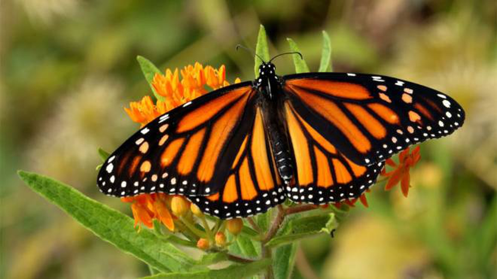

Le farfalle sono probabilmente gli insetti più belli grazie all’infinita varietà di disegni e colori che caratterizzano le ali, la parte più appariscente del loro corpo. Il volo è il loro modo “abituale” di spostarsi: alcune hanno un volo veloce e scattante, altre sono lente e pesanti. Le zampe vengono poco usate per la locomozione e servono essenzialmente per aggrapparsi al substrato quando si posano per riposare o per nutrirsi.
L’apparato boccale è costituito da una sorta di proboscide (spirotromba) con cui succhiano le sostanze liquide che costituiscono il loro cibo. Quando non viene usata, la proboscide è arrotolata a spirale sotto il capo; in molte specie raggiunge un notevole sviluppo, tale da consentire l’esplorazione delle corolle più profonde.
Posandosi sui fiori, le farfalle svolgono un ruolo molto importante nell’impollinazione; preferiscono posarsi sui fiori o tra i vegetali di cui si nutrono i bruchi, ma possono essere osservate anche sui tronchi e sui rami degli alberi, tra le pietre, nelle aie e nei cortili delle case.
Si parla comunemente di farfalle diurne e di farfalle notturne in quanto numerose specie sono attive nelle ore centrali della giornata, altre hanno abitudini crepuscolari, alcune si muovono solo al mattino, altre preferiscono l’oscurità totale.
Sono quattro le principali fasi di un ciclo vitale di una farfalla: uovo, bruco, pupa (o crisalide) e adulto. Le farfalle vivono in media un mese, ma alcune specie muoiono solo dopo poche ore, mentre altre sfiorano l'anno di vita. Le farfalle monarca, che vivono tra Stati Uniti e Messico e compiono migrazioni di migliaia di chilometri, possono vivere da due settimane a otto mesi. In Costa Rica ci sono farfalle che non vivono più di due giorni, mentre la Vanessa antiopa può arrivare a sfiorare l'anno di vita. Il record di longevità appartiene a una falena, che si nutre di una pianta chiamata Yucca baccata: la sua pupa può vivere fino a 30 anni prima di emergere come adulto.